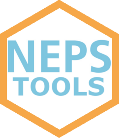

Rename variables by the words of their variable labels
rename_by_label.Rd`rename_by_label()` gives variables readable names built from their `"label"` attribute, e.g. after loading data with [read_neps()].
Arguments
- df
A data frame whose columns carry a `"label"` attribute.
- vars
Variables to rename, in tidyselect syntax as in [dplyr::select()]: names (`c(a, b)`), character vectors (`c("a", "b")`), ranges (`a:d`), helpers (`starts_with("ts")`), or negative selection (`-c(ID_t, wave)` = all except these). If `NULL` (default), all variables are renamed.
- exclude
Variables that keep their name while all others are renamed (tidyselect syntax). Only allowed if `vars` is `NULL`; equivalent to `vars = -c(...)`.
- sep
Separator between words and before numeric suffixes.
- lower
Convert names to lower case?
- min_words
Minimum number of label words to use per variable (if the label has that many; otherwise all available words). More words are only added when names would otherwise be duplicated. Default is 1.
Details
Each variable gets the first word of its label (or the first `min_words` words). If several variables end up with the same name, the next word of their labels is added for all of them (e.g. "age mother" / "age father" -> `age_mother` / `age_father`; "birth place mother" / "birth place father" -> `birth_place_mother` / `birth_place_father`). This repeats until the names are unique or the labels run out of words. Variables whose labels are completely identical get a numeric suffix `_1`, `_2`, ...
Labels are cleaned before use: German umlauts and sharp s are transliterated (ae, oe, ue, ss), all other characters that are not letters or digits are treated as word separators. Variables without a (non-empty) label keep their current name as the basis.
Only the variables selected via `vars` / `exclude` are renamed. All other variables keep their names, and new names never clash with them. The labels themselves are kept unchanged.
Examples
# Example with NEPS SC6 semantic structures spGap file
path <- system.file("extdata", "SC6_spGap_S_15-0-0.dta", package = "nepstools")
df_neps <- read_neps(path, english = TRUE)
# rename all variables by their labels
names(rename_by_label(df_neps))
#> [1] "id" "wave"
#> [3] "neps" "link"
#> [5] "spell" "number"
#> [7] "generated" "episode_has"
#> [9] "last" "contradiction_in_panel"
#> [11] "contradiction_in_wave" "type_of_gap_1"
#> [13] "auxiliary" "episode_mode"
#> [15] "type_of_gap_2" "other"
#> [17] "start_month_gap" "start_year_gap"
#> [19] "ongoing_of_retirement" "end_month"
#> [21] "end_year" "ongoing_of_gap"
#> [23] "check_module_start_date_month" "check_module_start_date_year"
#> [25] "check_module_end_date_month" "check_module_end_date_year"
#> [27] "check_module_episode" "check_module_spell"
#> [29] "training" "employment_during"
#> [31] "parental" "start_month_employment"
#> [33] "start_year_employment" "contractual"
#> [35] "employment_after" "months"
# keep the identifier variables, rename everything else
names(rename_by_label(df_neps, exclude = c(ID_t, wave, splink)))
#> [1] "ID_t" "wave"
#> [3] "neps" "splink"
#> [5] "spell" "number"
#> [7] "generated" "episode_has"
#> [9] "last" "contradiction_in_panel"
#> [11] "contradiction_in_wave" "type_of_gap_1"
#> [13] "auxiliary" "episode_mode"
#> [15] "type_of_gap_2" "other"
#> [17] "start_month_gap" "start_year_gap"
#> [19] "ongoing_of_retirement" "end_month"
#> [21] "end_year" "ongoing_of_gap"
#> [23] "check_module_start_date_month" "check_module_start_date_year"
#> [25] "check_module_end_date_month" "check_module_end_date_year"
#> [27] "check_module_episode" "check_module_spell"
#> [29] "training" "employment_during"
#> [31] "parental" "start_month_employment"
#> [33] "start_year_employment" "contractual"
#> [35] "employment_after" "months"
# rename only variables starting with "ts", use at least two label words
names(rename_by_label(df_neps, vars = dplyr::starts_with("ts"), min_words = 2))
#> [1] "ID_t" "wave"
#> [3] "nepswave" "splink"
#> [5] "spell" "subspell"
#> [7] "spgen" "spext"
#> [9] "spstat" "disagint"
#> [11] "disagwave" "type_of_gap_1"
#> [13] "auxiliary_variable" "episode_mode"
#> [15] "type_of_gap_2" "other_activity"
#> [17] "start_month_gap" "start_year_gap"
#> [19] "ongoing_of_retirement" "end_month"
#> [21] "end_year" "ongoing_of_gap"
#> [23] "check_module_start_date_month" "check_module_start_date_year"
#> [25] "check_module_end_date_month" "check_module_end_date_year"
#> [27] "check_module_episode" "spms"
#> [29] "training_course" "employment_during"
#> [31] "parental_leave" "start_month_employment"
#> [33] "start_year_employment" "th27101"
#> [35] "th27103" "months_employed"